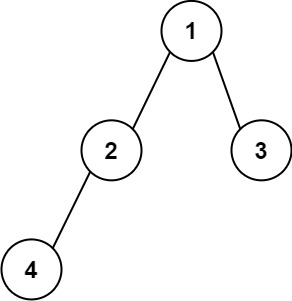
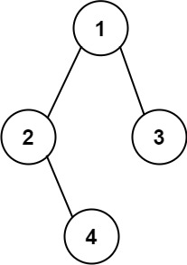

606. 根据二叉树创建字符串
前序遍历：每个结点写「值 + (左)(右)」，只有左孩子或没孩子时省略空括号；左空但有右孩子时必须写 () 占位。
思路
- 前序递归：先写结点值，再依次处理左右子树，括号跟着孩子走。
- 占位规则是唯一考点：右孩子存在而左孩子缺失时，必须补一对
()，否则左孩子的缺席无从体现，解码会歧义。 - 叶子什么都不加；只有左孩子写
(左)；两个孩子都有写(左)(右)。 - 用
StringBuilder顺着递归追加，整体一趟 O(n)。
图解
最优解
1class Solution {2 public String tree2str(TreeNode root) {3 StringBuilder sb = new StringBuilder();4 build(root, sb);5 return sb.toString();6 }7 8 // 前序写每个结点：值 + (左)(右)；左空但有右孩子时，左必须用 () 占位9 private void build(TreeNode t, StringBuilder sb) {10 if (t == null) return;11 sb.append(t.val);12 if (t.left != null || t.right != null) {13 sb.append('(');14 build(t.left, sb);15 sb.append(')');16 if (t.right != null) {17 sb.append('(');18 build(t.right, sb);19 sb.append(')');20 }21 }22 }23}题目
给定二叉树的根节点 root，你的任务是按照一组特定的格式规则创建该树的字符串表示。该表示应基于二叉树的前序遍历，并且必须遵循以下规则：
-
节点表示：树中的每个节点都应使用其整数值表示。
-
子节点的括号表示：如果一个节点至少有一个子节点（左子节点或右子节点），则其子节点应使用括号表示。具体来说：
- 如果一个节点存在左子节点，则应将左子节点的表示放在括号中，并紧跟在当前节点的值之后。
- 如果一个节点存在右子节点，则也应将右子节点的表示放在括号中。右子节点对应的括号应位于左子节点对应括号之后。
-
省略空括号：最终的树字符串表示中，应省略所有空括号对（即
()），但有一种特殊情况除外：当一个节点存在右子节点但不存在左子节点时，必须保留一对空括号，以表示左子节点缺失。这样可以保证字符串表示与原二叉树结构之间的一一对应关系。总而言之，当一个节点只有左子节点或者没有任何子节点时，应省略空括号对。但是，当一个节点只有右子节点而没有左子节点时，必须在右子节点的表示之前添加一对空括号，以准确表示树的结构。
示例 1：

输入： root = [1,2,3,4] 输出： "1(2(4))(3)" 解释： 原本需要表示为 "1(2(4)())(3()())"，但需要省略所有空括号对。因此最终得到 "1(2(4))(3)"。
示例 2：

输入： root = [1,2,3,null,4] 输出： "1(2()(4))(3)" 解释： 与第一个示例基本相同，不同之处在于2后面的()是必须保留的，因为它表示节点2不存在左子节点，但存在右子节点。
提示：
- 树中节点的数量范围为
[1, 104]。 -1000 <= Node.val <= 1000
题面取自力扣当前版本。
数据快照 2026-11-04。题面版权归力扣所有，本站点仅供本人学习使用，请勿对外发布。